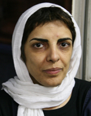

پذيرش > تریبون > به نام همگرایی به جای کمپین
 رابطه کمپین یک میلیون امضا با همگرایی بخشی از فعالان جنبش زنان رابطه کمپین یک میلیون امضا با همگرایی بخشی از فعالان جنبش زنان

 به نام همگرایی به جای کمپین به نام همگرایی به جای کمپین
1 خرداد 1388 - پروین اردلان - نسخه قابل چاپ
تغییر برای برابری - اکنون يک ماه از آغاز به کار ائتلاف برخی از فعالان و گروه های جنبش زنان به نام «همگرایی جنبش زنان برای طرح مطالبات در انتخابات» می گذرد. آنچه مرا وادار به نوشتن در اين باره کرده، بیان نقد و نظراتم درباره این ائتلاف و دلایل عدم شرکتم در آن نیست که در نوشته ای ديگر به آن خواهم پرداخت، بلکه ضرورت شفاف کردن رابطه کمپین یک میلیون امضا با این ائتلاف، فارغ از مخالفت یا موافقتم با آن است.
آنچه برای من به عنوان یکی از فعالان جنبش زنان در کمپین یک میلیون امضا پرسش برانگيز است و مبهم؛ چگونگی رابطه بین کمپین و همگرایی از منظر تدوین کنندگان و آغازگران این همگرایی است . چرا که دعوت کنندگان به این همگرایی گوئی به عمد یا سهو کوشیده اند کمپین را به «این همانی» با همگرایی، یا نوعی انتقال فاز «از کمپین به همگرایی» و يا «گروه و دسته و تشکیلات کمپین در همگرایی» تقلیل دهند. توجه علاقه مندان را به مصداق هایی از این دست جلب می کنم.
کمپین در همگرایی
در نخستین نشست مطبوعاتی همگرایی خانم پروین بختیار نژاد در گزارشی که از این نشست در نشریه اینترنتی روزآنلاین می دهد می نویسد:« فرزانه طاهري ... به نمايندگي از کمپين يک ميليون امضا، پيوستن به کنوانسيون رفع تبعيض عليه زنان را خواسته ي جدي جنبش زنان اعلام کرد.» [1]
پرسش : مگر کمپین تشکل و گروه است که بخواهد نماینده تعیین کند؟
خانم مریم محمدی خبرنگار رادیو زمانه در گفتگو با شهلا لاهیجی از وی می پرسد :«خانم لاهیجی، در بین سازمانها و نهادهای امضا کنندهی بیانیه، نام «کمپین یک میلیون امضا در قم»، دیده میشود و اسم کمپین به طور کلی در اینجا نیست. آیا این به این معنا است که «کمپین یک میلیون امضا» در کلیت خود، مدافع این بیانیه نیست؟» و خانم لاهیجی در پاسخ می گوید:« نه، اعضای کمپین تهران هم همه بودند. ممکن است اسم آنها از قلم افتاده باشد. ولی همهی اعضای آن حاضر بودند. احتمالاً بعداً اسم آنها هم خواهد بود.» [2]
پرسش اينجاست : آیا همه اعضای کمپین به حاضران در جلسه همگرایی محدود هستند؟ از این منظر کمپین یک گروه حقیقی است یا شخص حقیقی ؟
این ماجرا بازهم ادامه می یابد خانم مینو مرتاضی نیز در گفتگو با رادیو فردا در پاسخ به طرف مباحثه خانم شفیق می گوید:«محدود کردن جنبش زنان به جنبش کمپین و محدود کردن مطالبات آن به یک مطالبه، تقلیلگرایی جنبش زنان است. به علاوه سردمداران کمپین این را امضا کردهاند و مطالبات حداقلی و حداکثریشان هم لغو کلیه اشکال تبعیض است ...» [3]
پرسش اينجاست: آیا برخی از نخستین امضا کنندگان بیانیه کمپین یا به تعبیر خانم مرتاضی سردمداران کمپین ، حق آب و گل و تعمیم دادن نظرات خود را به کل کمپین دارند؟ مگر کمپین حزب سیاسی است که پیرو نظر سردمدارانش آن هم در ائتلاف دیگری با هدف دیگری غیر از کمپین صاحب نظر کمپین باشند؟
بعد هم قیاس دو حرکت کمپین و همگرایی با تقلیل کمپین به یک «مطالبه در جنبش زنان» بدون در نظر گرفتن رابطه دو حرکت، جنس مطالبه و روش دستیابی به مطالبات، ساده انگاری سیاسی از آن نوعی است که هرچه مطالبه را «حداکثری تر» بداند، باید «مهم تر» و «سیاسی تر» باشد.
جالب تر از همه اظهارات منصوره شجاعی از دعوت کنندگان به این ائتلاف است. او در گفتگو با برنامه زن امروز /صدای امریکا با اشاره به تجمع 1384 در برابر دانشگاه تهران و در فضای انتخاباتی – و با پرش از روی 22 خرداد 1385 - نتیجه می گیرد که حاصل آن تجمع و استفاده از عرصه انتخاباتی، تولد کمپین یک میلیون امضا و حاصل کمپین یاد گرفتن فعالیت مدنی برای خواست مطالبات از کانال های مردمی و مخاطب قرار دادن دستگاه های قانون گذار شد...
وی با این مقدمه ادامه می دهد: «حرکت کمپین جنبش زنان را آماده می کرد برای این که خودش را به سمت و سوی مطالباتش آزموده کند. وقتی این فضای انتخابات پیش آمد گروه هایی از جنبش زنان به این فکر افتادند که با توجه به فشارهایی که در این دوران 4 سال بر فعالان کمپین آمده است، با توجه به دستگیری ها و فشارها، حالا باید یک حرکت جدید را رو کنیم و یک تاکتیک جدید را . حالا مطالباتمان را با یک تاکتیک جدید و هوشیاری جدید مطرح کنیم. ما وارد تبلیغ انتخاباتی نشدیم که نهایتا پشت موسوی یا کروبی قرار بگیریم... ما از فضایی استفاده کردیم که مطالبتمان را مطرح کنیم. فضایی که همه نیروهای اجتماعی در آن حساس هستند وقتی حساس می شوند پیام را می گیرند و وقتی تمام بچه های ما تحت فشارند باید راه های جدید برای بحث مطالبات مان پیدا کنیم ...» [4]
پرسش اين است : آیا به تعبیر وی بايد بپذيريم که همگرائی دنباله کمپين يک ميليون امضاست ؟ باید از همگرایی ممنون هم باشیم که به خاطر «بچه هایی که تحت فشارند» به طرح مطالبات از کاندیداها می پردازند و لابد «به نمایندگی» از کمپین؟
کمپین گروه و حزب و دسته و تشکیلات نیست
کمپین یک میلیون امضا برای تغییر قوانین تبعیض آمیز همان طور که از اسم آن بر می آید حرکتی است مطالبه محور برای طرح مطالبات حقوقی مشخص و تلاش برای تغییر این قوانین از طریق جمع آوری آمضا و ارتباط چهره به چهره. امضا کنندگان آغازین اين کمپين که من هم در زمره آنان بودم 54 نفر بودند با گرایش های گوناگون فکری و عقیدیتی و سیاسی نه گروه و حزب و دسته و رده و ...، آنها فقط آغازگران و یا بنیانگذاران این حرکت بودند ونه صاحبان و متولیان آن. شاید پیش بینی گسترش این تلاش افقی آن هم در جامعه مردسالار و تمامیت خواهی که تمامی شریان های تنفسی فرهنگ، قانون و مناسبات سیاسی و اجتماعی و فرهنگی را اشغال کرده – آن هم در شرایطی که عمر روزنامه ها از انتشار تا توقیف به یک روز هم نمی رسد - چندان آسان نمی نمود؛ و نه برای فعالان جنبش زنان و نه برای دستگاه اطلاعاتی امنیتی، انتظار دوام آن نمی رفت. اما دوام آورد و راه خود بازنمود.
اما تلاش برای تقلیل کمپین یک میلیون امضا به گروه و ایجاد ساختار نمایندگی و تصمیم سازی برای آن، تاکنون به شکل های گوناگون از سوی برخی از فعالان کمپین مطرح شده است.وقتی کمپين جایزه سیمون دوبووار را از آن خود کرد نمی دانستيم چه کسی را برای دریافت آن بفرستیم و برای دریافت یا عدم دریافت مبلغ نقدی جايزه چه تصمیمی بگیریم . اين پرسش مطرح شد که اساسا برای تصمیم گیری در کمپین چه کنیم. به زعم برخی باید برای دريافت جایزه مان ساختار تصمیم گیری می ساختیم! فرصتی طلایی برای سازمان سازی از کمیپن!
اما رفتن به سوی قالب های مشخص و روشن سازمانی گرچه می توانست فعالیت در کمپین را تسهیل بخشد به همان اندازه نیز می توانست این ساخت شبکه ای و افقی گسترش یابنده را محدود و ایستا کند که در برخی موارد نیز چنین شد، برخی کمپین های گوناگون در شهرها و کشورهای مختلف حول اهداف کمپین شکل گرفتند اما به جای آنکه ماهیت کمپینی و جنبشی خود را حفظ کنند برای خود ماهیت سازمانی قائل شدند بی آن که اساسا دارای سازمانی باشند و یا سازوکار سازمانی داشته باشند. مثال بارز آن شرکت برخی است در همگرایی به نام کمپين يک ميليون امضا در شهرها و کشورهایی چون قم و اصفهان، نروژ، ایتالیا و اتریش. در برابر آن هم دیدیم که نه برای مقابله با همگرایی که به دلیل ساختاری بسیاری از کمپینیان نام «کمپین» را به مثابه گروه در همگرایی شرکت ندادند. یا در موارد دیگر می بینیم که برخی از فعالان کمپین در اصفهان خود را زیر عنوان «گروه تغییر برای برابری دراصفهان » نام گذاری می کنند تا زیر نام گروه، هم عضو همگرایی شوند و هم برای بازداشتی های کمپین در روزکارگر بیانیه صادر کنند. در حالی که تاکنون هربیانیه ای در دفاع از فعالان کمپین یا موارد دیگری صادر شده است عده ای از کمپینی ها نوشته و برای برخی فرستاده اند و برایش نیز امضا جمع کرده اند. هرکس موافق بوده امضا کرده و هرکس نبوده نکرده است، گروهی هم اعلام متولی گری نکرده است.
دراینجا البته بحث بر سر حضور يا عدم حضور فعالان کمپين در همگرایی نیست. بحث ما در نتايج اختلاط هويت کمپين و ديگر فعاليت هاست که نهايتا به ضربه پذیر کردن جنبشی می انجامد که قدرتمند شدنش نه در گرو سازمانی شدن و افزایش کمی کمپین ها بلکه تنها و تنها در گستردن برابری خواهی در گوشه و کنار این سرزمین به مدد اشکال گوناگون و متنوع فعاليت حول محور خواسته های کمپین است، همین فراروی ازفعالیت تشکیلاتی؛ و گوناگونی آن در شبکه ای وسیع با گرایش ها و ایدئولوژی های متنوع رمز پایداری اين کنش بوده است. کمپین البته می تواند به ایجاد گروه های بسیاری فراتر از کمپین دامن زند اما گروه های فعال درکمپین فقط گروه های اجرایی حول مطالبات کمپین هستند. هم اکنون، به طور مثال، در میان فعالان کمپین در تهران از تحریم کننده انتخابات، تا فعال در ستادهای انتخاباتی و یا فعال در همگرایی حضور دارند اما آيا می توان به نام کمپين سياستی در برابر انتخابات در پيش گرفت ؟ آن را تحريم کرد يا رای دادن به اين يا آن کانديدا را توصيه کرد؟ آيا می توان کمپين را همچون همگرائی با طرح برخی مطالبات وارد کارزاری حول انتخابات نمود؟
گروه سازی از کمپین اکنون بیش از گذشته مورد توجه وزارت اطلاعات نیز قرار گرفته است به طوری که متهمان کمپین را با پرسش های دیگری مواجه می کنند. اکنون بازجویان این نهاد دیگر نمی توانند بگویند با مطالبات شما و روش کار شما مشکل داریم، چون به مدد فعالیت پیوسته کمپینی ها خودشان هم نمی توانند تبعیض آمیز بودن قوانین را انکار کنند، حداقل بیش از 60 بازداشتی در کمپین، ارتباط چهره به چهره کمپینی ها با آنان را نیزموجب شده و تاثیر خود را گذاشته است. بنابراین اکنون باید دستاویز دیگری برای سرکوب بیایند. متهمان جدید کمپین در برگه های بازجویی شان باید گروه و تشکیلات و سازمان را تعریف کنند و آنقدر مورد پرسش و پاسخ قرار بگیرند تا کارشناسان وزارت اطلاعات بتوانند اسنادی را برای گروه و تشکیلاتی بودن کمپین تهیه کنند و کمپینی ها را مشمول ماده 498 و499 قانون مجازات اسلامی کنند تا بلکه تیشه به ریشه این جنبش خود جوش بزنند.
همگرایی همان کمپین یا ادامه آن نیست
قرار بود یک میلیون امضا جمع شده و سپس امضاها به مجلس داده شود و فاز بعدی کمپین آغاز شود اما روند ناشی ازبگیرو ببند و بستن فضاهای عمومی و دستگیری روز افزون اعضای کمپین و کنش آگاهی بخشی در جمع آوری امضا و حاصل هر روزه امکان جمع اوری امضا را کاهش داد و دشوار تر کرد اما نه آن که متوقف کند. اگر در شهری کنش فعالان کند می شود درشهردیگری آغاز می شود، اگر یکی تحت فشار بر کمپین منفعل می شود، فعال دیگری در جای دیگر سر بر می آورد، اگر رسیدن به رقم میلیونی بسیار آسان می نمود و اکنون دشوار، اما تبدیل تدریجی گفتمان زن ستیز در جامعه به گفتمان برابری خواهی و تبعیض ستیز عینی و ملموس شده است. اگر ابتدا به اولویت بندی و مرحله بندی کمپین در فازهای جمع آوری امضا و سپس ارائه طرح و لایحه به مجلس و ... قائل بودیم در روند کار فهمیده ایم که اولویت بندی فقط آنگاه هدف می شود که مسیر ما خطی و ایستا و به ویژه از بالا به پایین و غیرمشارکتی باشد نه در حرکتی افقی و پویا و سیال که کميت کنش گران و چگونگی کار آنها روز به روز امکان تغییر دارند.
چنين است که در روند جمع آوری امضا ، با شدت گیری بازداشت ها، شناخت حقوق شهروندی و متهمین برایمان ضروری شد، یا در برگزاری کارگاه های آموزش حقوقی کمپین، ضرورت پرداختن به خشونت و تاثیرات آن در خانه و خانواده و با تشکیل کارگاه های خشونت مطرح شد، یا در فقدان دسترسی به فضاهای عمومی ،نیاز به گسترش هنر خیابانی در متن حرکت "چهره به چهره" ، اجرای تئاترهای فی البداهه خیابانی حول مطالبات قوانین شکل گرفت، و نيز جمع آوری امضا، کار مطالعاتی درحیطه مطالبات کمپین از جمله مطالعات موردی در باره قوانین تبعیض آمیز و تشکیل کارگروه های اجرایی مطالعاتی و اجرایی حول مطالبات کمپین را مطرح کرد..... می خواهم بگویم چنین کمیپنی نمرده است که بخواهند برایش جانشین و دنباله تعریف کنند و تعیین تغییر فاز کنند. حرکنی که با 54 نفر آغاز شد کرد اکنون به شبکه ای وسیع از افراد و همچنین گروه های اجرایی در تهران و شهرستان و سایر کشورها گسترش يافته که حضوری زنده و ملموس دارد و به حيات فعال خود ادامه می دهد ، لااقل یکی ازموفقیت های عمده این حرکت چنین بوده که کاندیداهای ریاست جمهوری کنونی را نیز متوجه حقوق زنان و اهمیت نقش و رای زنان کرده است نه آن که در مدتی دوماهه و به واسطه مطالبه خواهی پرشتاب به کشف و شهود مطالبات زنان رسیده باشند، این حرکت هزینه هایی گزاف از بازداشت و زندان و توبیخ و ...برای عمومی کردن این گفتمان داده است که ساده اندیشی است ندیدن آن.
برخی از فعالان کمپین در همگرایی هم فعال شده اند آما ایا این بدان معناست که «کمپین» در همگرایی هست؟ اسامی برخی از بانیان اولیه کمپین در همگرایی نیز هست آیا بدان معناست که هرجا آنها هستند کمپین هست؟ چگونه می شود حرکتی از پایین را که مخاطبش مردم هستند و فشارش بر قانون گذاران و کنش آن ساری و جاری است به حرکتی از بالا به پایین که مخاطبش کاندیداها هستند تعمیم داد ؟ چگونه می توان الفبای اخلاق جمعی و فمینیستی را برای کمپینی ها که امروز شمارشان بسيارند و بعضی در زندان اند و حاضرو ناظر نیستند رعایت نکرد و برای ادامه کار کمپین به نام همگرایی برنامه ریزی کرد؟
در عین حال اگر همگرایی ائتلافی است برای طرح خواسته های برخی فعالان جنبش زنان از کاندیداهای ریاست جمهوری، طبعا بزودی پايان می گيرد اما کنش کمپين در متن جامعه مدنی ادامه دارد. بگذريم از اين نکته که کاندیداها در رقابت برای جلب آرا زنان برنامه هائی اعلام می کنند که از مطالبات این همگرایی پیشی می گيرد .
شايد قراراست در ضرب العجل دوماهه کارزار انتخابات، مجلس ختمی برای کمپین برگزار شود که برخی چنين در تکاپويند که از کمپين به نام خود سکه بزنند و تاریخ بسازند. اما کمپین قائم به فعالان و امضا کنندگان آن است .اگر من به عنوان یکی فعالان کمپین نخواهم روزی به فعالیتم در کمپین ادامه دهم تنها می توانم اعلام کنم که دیگر در کمپین نیستم، می توانم بروم چون بسیاری که رفتند و بسیاری که آمدند. يا اگر فکر کنم اين حرکت به بن بست رسیده می توانم نقد و دلایلم را بگویم، اما نمی توانم بودن یا نبودن کمپین را قائم به بودن یا نبودن خودم کنم و بگویم حالا تصمیم مان برای کمپین چنین و چنان شد. ائتلاف سازی برای استفاده از فرصت انتخاباتی چه ربطی یه ادامه سازی برای کمپین دارد که دوستان آگاهانه بلندگوی آن می شوند؟
همان طور که در بالا به آن اشاره کردم سخنان یکی از اعضای این ائتلاف در برنامه زن امروز بیش از همه این سوال را برای من ایجاد می کند که چرا از ابتدا فعالان همگرائی به طور شفاف اهداف خود را بیان نکردند؟ چرا آنها که از تدوین کنندگان بیانیه همگرائی هستند به طور شفاف عنوان نکردند که ما قصد داریم مسیر کمپین را با عنوان تاکتیک جدید عوض کنیم ؟ چرا در نخستین بیانیه همگرائی که برخی نويسندگان آن در زمره آغاز کنندگان کمپین بوده اند و نه همه آنان چنين سخنی به میان نیامد که لااقل کمپینی ها بدانند که چنين طرحی درحال ساخته شدن است؟
از خود و ما و شما می پرسم : آيا شايسته تر نيست به بازی های زبانی و مظلوم نمایی های پرسرو صدا پايان دهيم ؟ درست تر آن نيست که از آسمان و ریسمان به هم بافتن برای آن که نتیجه خود را بگیریم دست برداريم و شفاف سخن بگوئيم ؟ شاید یکی از پیچیدگی ها و در عین حال حقارت های زندگی ما در این دوران و در این جامعه همين فضای ریاساز و "فرهنگ تقیه" است که می کوشد از ما چهره های چند شخصیتی بسازد هرچند سرسختی و مقاومت ما در برابر آن هم کم زور نبوده است.
در زمانه ای که نان به نرخ روز خوردن "عقلانی" محسوب می شود ، مبارزه پی گیر ، مسالمت جویانه و آرمان خواهانه فعالان جنبش های گوناگون و نيز رویکرد مشارکت جویانه و در عین حال انتقادی جنبش های اجتماعی در برابر زیست فرصت طلبانه مقاومت می کند و پاسخ می طلبد. حتی جنگ قدرت در ميان جناح های متفاوت حاکمیت نیز اخلاقیات و ادعاهای جامعه ارزشی را به چالش کشانده و شفاف کاری می طلبد.
اکنون برای کسانی که خود را عملگرا می دانند اخلاق جمعی و شفافیت عملی ایجاب می کند اگر نه در پيش که همگام جامعه خود باشند. عدم شفافیت برای استفاده از فرصت انتخاباتی، ابهام گویی و چند پهلو سخن گفتن، از جنس سیاست ورزی های قدرت مدارانه و امنیتی است که به نام مطالبات بخشی از جنبش زنان نام گرفته است.
ارسال به
بالاترین
،
توییتر
،
فریندفید
،
فیسبوک
در همين بخش :
 دهمین دورۀ مراسم تندیس صدیقه دولت آبادی ۱۳۹۲ دهمین دورۀ مراسم تندیس صدیقه دولت آبادی ۱۳۹۲
کارت پستالهایی به بهانهی هشت مارس و به یاد همهی مبارزین راه برابری
بیانیه بیش از 350 تن از مدافعان حقوق زنان به مناسبت روز جهانی زن؛ زنان هر روز فرودستتر میشوند
لباسی که برای تن ما دوخته اند! /اعظم بهرامی
چالشها و چشمانداز فعالیت مدنی زنان
ديگر بخش ها :
طرح یک میلیون امضا
|
مقالات
|
سایت نوشته ها
|
اخبار
|
گزارش كمپين
|
گفت و گو
|
علیه سکوت
|
كوچه به كوچه
|
نامه های شما
|
گزارش ویژه
|
گفتگو با اعضا
|
ویژه سالگرد کمپین
|
تصویر برابری
|
دل آرام علی
|
تریبون
|
مقالات
|
تاریخ شفاهی
|
خارج از چارچوب
|
کتابخانه
|
درباره کمپین
|
کمپین در شهرها
|
کمپین در بند
|
صدای تغییر
|
ویژه 22 خرداد
|
لایحه حمایت از خانواده
|
گالری
|
عشا مومنی
|
امیر یعقوبعلی
|
خدیجه مقدم
|
راحله عسگری زاده و نسیم خسروی
|
پروین اردلان،جلوه جواهری، مریم حسین خواه، ناهید کشاورز
|
زینب پیغمبرزاده
|
سعیده امین، سارا ایمانیان، محبوبه حسین زاده، ناهید کشاورز و همایون نامی
|
احترام شادفر
|
نسیم سرابندی زاده،فاطمه دهدشتی
|
وبلاگ مهمان
|
پرونده خرم آباد
|
دستگیری ها
|
مریم مالک
|
پرستو اللهیاری
|
مهرنوش اعتمادی
|
سمیه رشیدی
|
Other Languages
|
همراهان
|
«فراخوان کمپین ده روز با بهاره هدایت»
| English
|